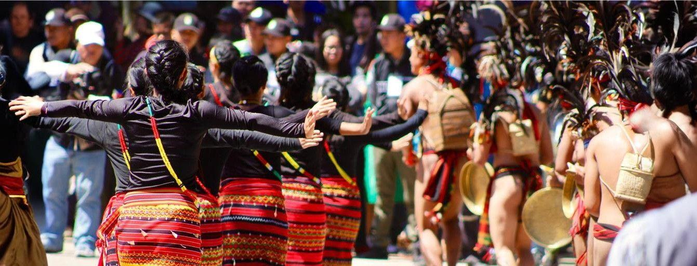

MUSEUM DIGITAL / VOL. 01MALUKU UTARA, INDONESIA
DARI TIMUR, UNTUK DUNIAMALUKU
MALUKU
UTARA.
BANYAK PULAU.
SATU CERITA BESAR.
SATU CERITA BESAR.
Di antara laut, rempah, dan gunung,
ada warisan yang terus hidup.
BUKAN SEKADAR MASA LALU.
INI ADALAH KITA, HARI INI.GULIR UNTUK MENGENAL ↓
INI ADALAH KITA, HARI INI.GULIR UNTUK MENGENAL ↓
SEBUAH PERJALANAN BUDAYA — MOLOKU
01 / TANAH & CERITAWARISAN YANG MENYATUKAN
KECIL DI PETA.
BESAR DI CERITA.
Laut mempertemukan pulau. Budaya mempertemukan kita.
Maluku Utara menyimpan kisah yang tumbuh bersama masyarakatnya. Dari ruang pertemuan adat di Halmahera hingga panggung tari di Ternate, setiap warisan membuka cara baru untuk mengenal kepulauan ini.
Kenali warisan yang masih hidup ↗02 / GERAK & IRAMABUKAN HANYA PERTUNJUKAN
WARISAN DALAM GERAKLANGKAH YANG
MENJAGA INGATAN.

TERNATE / SENI PERTUNJUKAN03 / RUANG & IDENTITASJELAJAHI CERITA KEPULAUAN
SATU KAWASAN, BERAGAM SUARAPULAU-PULAU.
PULAU-PULAU.
JUTAAN MAKNA.
Pilih tempat untuk membuka jendela budayanya. Setiap pulau memiliki cerita yang layak didengar.
04 / KOLEKSI BUDAYAKENALI. PAHAMI. TERUSKAN.
ARSIP UNTUK SEMUADEKAT DENGAN
DEKAT DENGAN
AKAR KITA.
Potongan cerita dari warisan Maluku Utara.
Pilih koleksi untuk mengenal lebih jauh.
BUDAYA HIDUP
SAAT DITERUSKAN.
SEBERAPA DEKAT KAMU DENGAN WARISAN KITA?
KENALAN DULU, YUK!
Sasadu merupakan ruang bersama masyarakat suku…
Pilih satu jawaban untuk menguji pengetahuanmu.